หนังสือและสิ่งพิมพ์
หนังสือ วารสาร สื่อดิจิทัล และเอกสารเผยแพร่ของสำนักงาน
สิ่งพิมพ์ของสำนักงานราชบัณฑิตยสภา
หนังสือ พจนานุกรม และสารานุกรมที่สำนักงานจัดพิมพ์ ทั้งหมด 177 รายการ
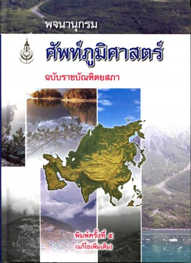
พจนานุกรมศัพท์ภูมิศาสตร์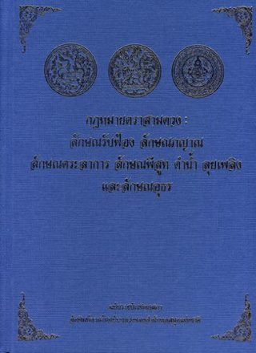
กฎหมายตราสามดวง : ลักษณรับฟ้อง ลักษณภญาณ ลักษณตระลาการ ลักษณพีสูท ดำน้ำ ลุยเพลิง และลักษณอุธร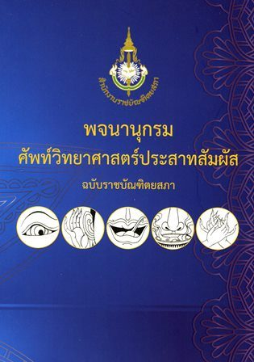
พจนานุกรมศัพท์วิทยาศาสตร์ประสาทสัมผัส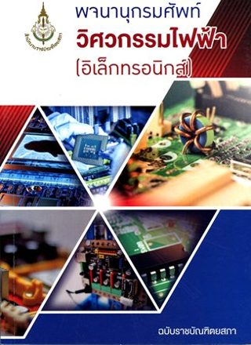
พจนานุกรมศัพท์วิศวกรรมไฟฟ้า (อิเล็กทรอนิกส์) สารานุกรมประวัติศาสตร์สากลสมัยใหม่ : ยุโรป เล่ม 7 อักษร T-Z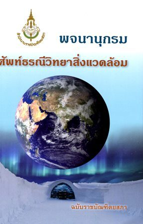
พจนานุกรมศัพท์ธรณีวิทยาสิ่งแวดล้อม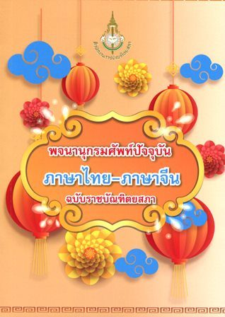
พจนานุกรมศัพท์ปัจจุบัน ภาษาไทย-ภาษาจีน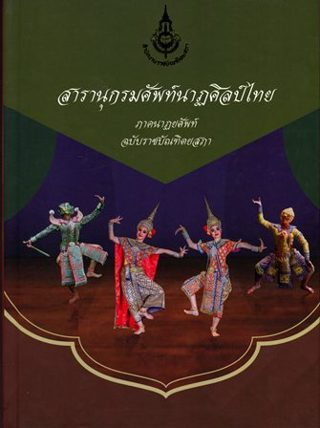
สารานุกรมศัพท์นาฏศิลป์ไทย ภาคนาฏยศัพท์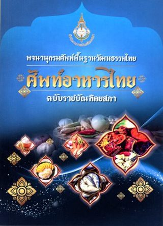
พจนานุกรมศัพท์พื้นฐานวัฒนธรรมไทย ศัพท์อาหารไทย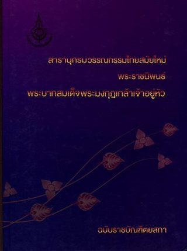
สารานุกรมวรรณกรรมไทยสมัยใหม่ พระราชนิพนธ์ พระบาทสมเด็จพระมงกุฎเกล้าเจ้าอยู่หัว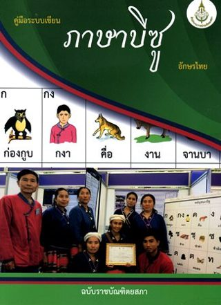
คู่มือระบบเขียนภาษาบีซู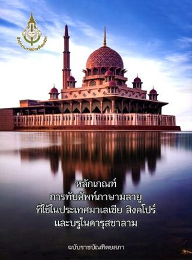
หลักเกณฑ์การทับศัพท์ภาษามลายูที่ใช้ในประเทศมาเลเซีย สิงคโปร์ และบรูไนดารุสซาลาม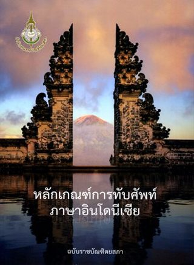
หลักเกณฑ์การทับศัพท์ภาษาอินโดนีเซีย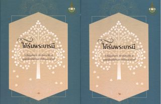
ใต้ร่มพระบารมี จักรีนฤบดินทร สยามินทราธิราช บุรพกษัตริย์แห่งมหาจักรีบรมราชวงศ์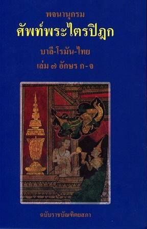
พจนานุกรมศัพท์พระไตรปิฏก บาลี-โรมัน-ไทย เล่ม 7 อักษร ก-จ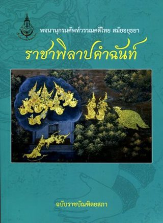
พจนานุกรมศัพท์วรรณคดีไทย สมัยอยุธยา ราชาพิลาปคำฉันท์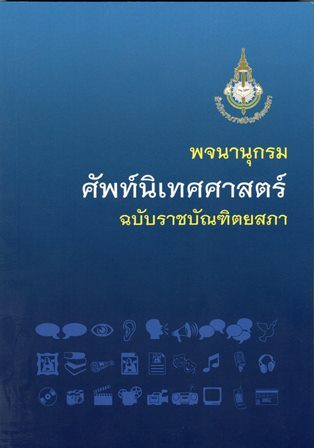
พจนานุกรมศัพท์นิเทศศาสตร์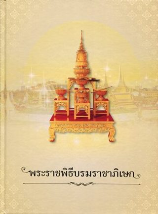
พระราชพิธีบรมราชาภิเษก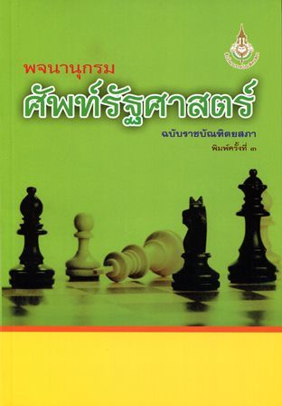
พจนานุกรมศัพท์รัฐศาสตร์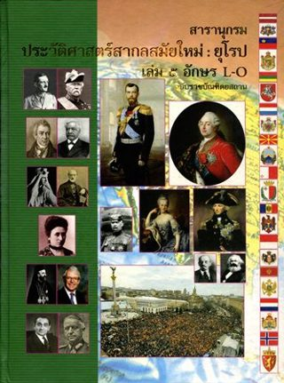
สารานุกรมประวัติศาสตร์สากลสมัยใหม่ : ยุโรป เล่ม 5 อักษร L-O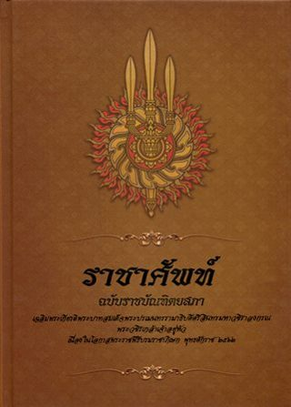
ราชาศัพท์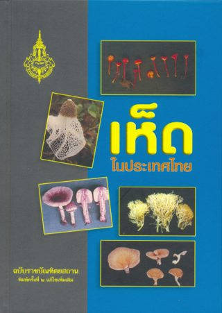
เห็ดในประเทศไทย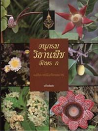
อนุกรมวิธานพืช เล่ม ๑ อักษร ก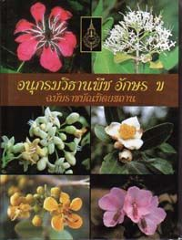
อนุกรมวิธานพืช เล่ม ๒ อักษร ข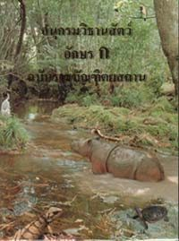
อนุกรมวิธานสัตว์ เล่ม ๑ อักษร ก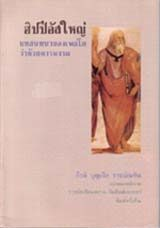
ฮิปปีอัสใหญ่ บทสนทนาของเพลโตว่าด้วยความงาม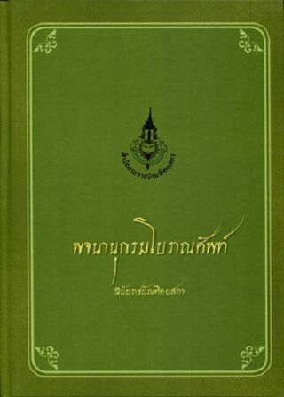
พจนานุกรมโบราณศัพท์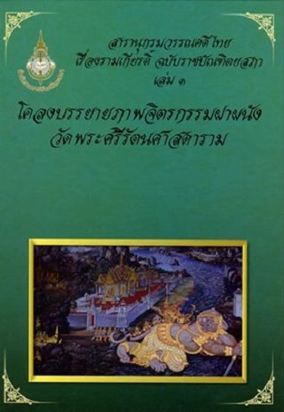
สารานุกรมวรรณคดีไทย เรื่องรามเกียรติ์ ฉบ้บราชบัณฑิตยสภา เล่ม 1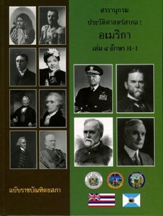
สารานุกรมประวัติศาสตร์สากล : อเมริกา เล่ม ๔ อักษร H-I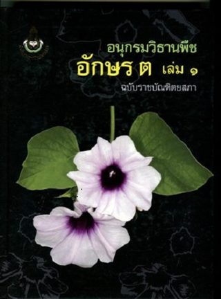
อนุกรมวิธานพืช อักษร ต เล่ม 1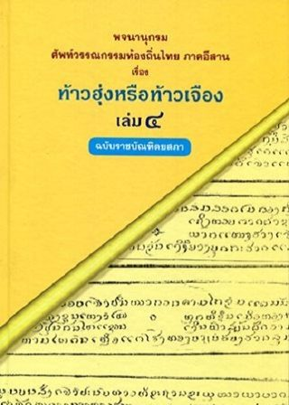
พจนานุกรมศัพท์วรรณกรรมท้องถิ่นไทย ภาคอีสาน เรื่องท้าวฮุ่งหรือท้าวเจือง เล่ม 4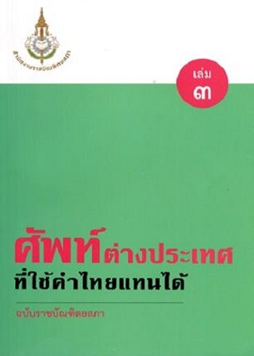
ศัพท์ต่างประเทศที่ใช้คำไทยแทนได้ เล่ม 3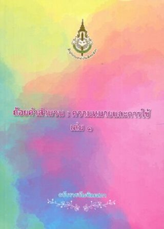
ถ้อยคำสำนวน : ความหมายและการใช้ เล่ม 1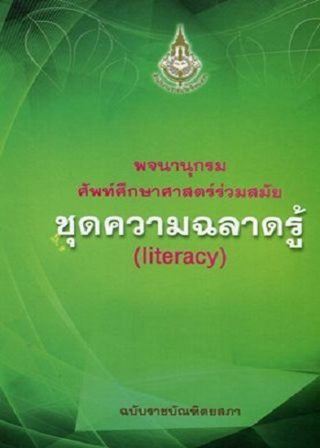
พจนานุกรมศัพท์ศึกษาศาสตร์ร่วมสมัย ชุดความฉลาดรู้ (literacy)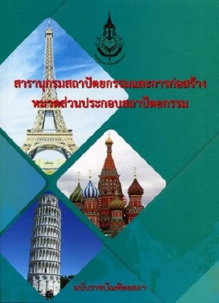
สารานุกรมสถาปัตยกรรมและการก่อสร้าง หมวดส่วนประกอบสถาปัตยกรรม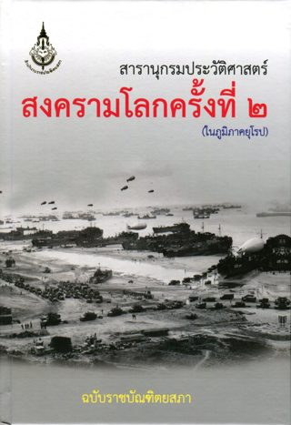
สารานุกรมประวัติศาสตร์สงครามโลกครั้งที่ 2 (ในภูมิภาคยุโรป)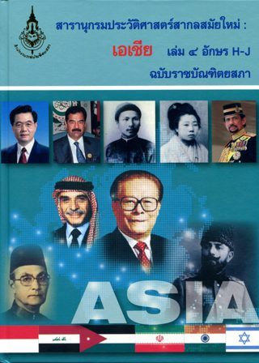
สารานุกรมประวัติศาสตร์สากลสมัยใหม่ : เอเชีย เล่ม 4 อักษร H-J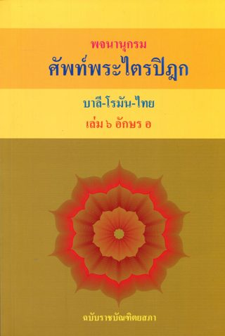
พจนานุกรม ศัพท์พระไตรปิฎก บาลี-โรมัน-ไทย เล่ม 6 อักษร อ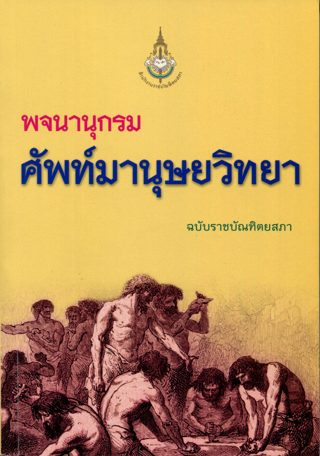
พจนานุกรมศัพท์มานุษยวิทยา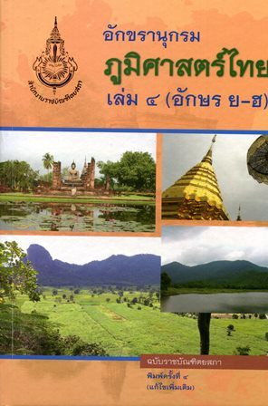
อักขรานุกรมภูมิศาสตร์ไทย เล่ม ๔ (อักษร ย-ฮ)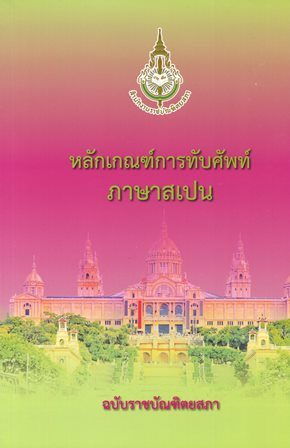
หลักเกณฑ์การทับศัพท์ภาษาสเปน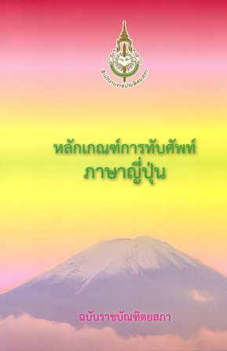
หลักเกณฑ์การทับศัพท์ภาษาญี่ปุ่น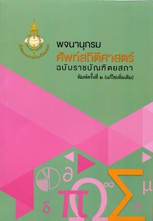
พจนานุกรมศัพท์สถิติศาสตร์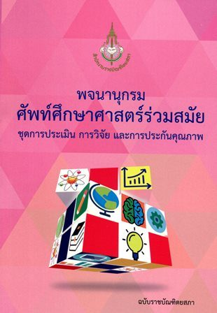
พจนานุกรมศัพท์ศึกษาศาสตร์ร่วมสมัย ชุดการประเมิน การวิจัยและการประกันคุณภาพ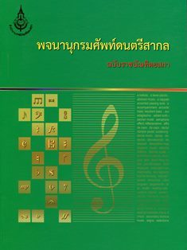
พจนานุกรมศัพท์ดนตรีสากล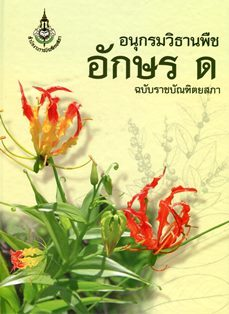
อนุกรมวิธานพืช อักษร ด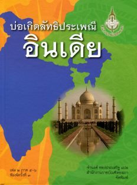
บ่อเกิดลัทธิประเพณีอินเดีย ภาค ๕-๖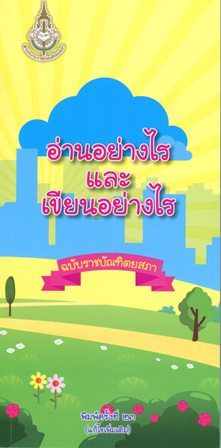
อ่านอย่างไรและเขียนอย่างไร พจนานุกรมศัพท์ปิโตรเคมี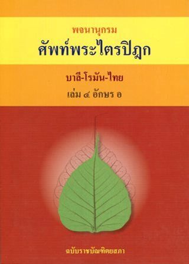
พจนานุกรมศัพท์พระไตรปิฏก บาลี-โรมัน-ไทย เล่ม 4 อักษร อ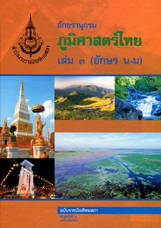
อักขรานุกรมภูมิศาสตร์ไทย เล่ม ๓ (อักษร น-ม)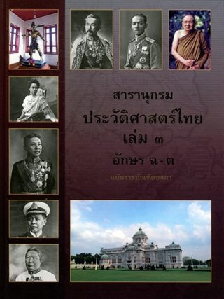
สารานุกรมประวัติศาสตร์ไทย เล่ม 3 อักษร ฉ-ต พจนานุกรมศัพท์วรรณกรรม (แก้ไขเพิ่มเติม) พจนานุกรมศัพท์ลายไทย (แก้ไขเพิ่มเติม) สารานุกรมศัพท์ดนตรีไทย ภาคประวัตินักดนตรีและนักร้อง พจนานุกรมศัพท์พระไตรปิฏก บาลี-โรมัน-ไทย เล่ม 5 อักษร อ พจนานุกรมศัพท์ภาษาศาสตร์ (ภาษาศาสตร์ทั่วไป) ภาษิต คำพังเพย สำนวนไทย สารานุกรมไทย เล่ม ๓๐ อั้งยี่ – ไฮโดรเจน อนุกรมวิธานพืช อักษร ฉ-ฒ อนุกรมวิธานพืช อักษร ฆ-จ สารานุกรมศัพท์ดนตรีไทย ภาคคีตะ-ดุริยางค์ คู่มือระบบเขียนภาษากฺ๋อง อักษรไทย คู่มือระบบเขียนภาษาโซ่ (ทะวืง) อักษรไทย พจนานุกรมศัพท์ปรัชญา พจนานุกรมศัพท์ประกันภัย คำไทยที่มาจากภาษาบาลีและภาษาสันสกฤต ศัพท์บัญญัติพระองค์วรรณฯ พจนานุกรมศัพท์พันธุศาสตร์ พจนานุกรมศัพท์พฤกษศาสตร์ พจนานุกรมศัพท์พอลิเมอร์ พจนานุกรมศัพท์วัสดุนาโน สารานุกรมจิตวิทยา เล่ม 2 อักษร C-F สารานุกรมสถาปัตยกรรมและการก่อสร้าง หมวดประวัติศาสตร์สถาปัตยกรรม ศัพท์ต่างประเทศที่ใช้คำไทยแทนได้ เล่ม ๒ ภาษาและวัฒนธรรมอาเซียน เล่ม ๒ สารานุกรมการเมืองการปกครองไทย เล่ม ๑ อักขรานุกรมภูมิศาสตร์ไทย เล่ม ๒ (อักษร ก-ธ) พจนานุกรมศัพท์คณิตศาสตร์ พจนานุกรมศัพท์บริหารธุรกิจ คู่มือระบบเขียนภาษาญัฮกุรอักษรไทย คู่มือระบบเขียนภาษาเลอเวือะอักษรไทย สารานุกรมจิตวิทยา เล่ม 1 อักษร A-B สาส์นสมเด็จ เล่ม ๑ พ.ศ. ๒๔๕๗-๒๔๖๑ พจนานุกรมศัพท์ศึกษาศาสตร์ร่วมสมัย กฎหมายตราสามดวง : พระธรรมสาตรและหลักอินทภาษ สารานุกรมประวัติศาสตร์สากลสมัยใหม่ : ยุโรป เล่ม ๖ อักษร P-S อนุกรมวิธานพืช อักษร ข เล่ม ๒ ศัพท์บัญญัติชื่อแร่และศัพท์บัญญัติชื่อธาตุ พจนานุกรมศัพท์วิศวกรรมอุณหภาพ พจนานุกรมศัพท์แร่และอัญมณี อนุกรมวิธานพืช อักษร ค พจนานุกรมศัพท์เศรษฐศาสตร์ พจนานุกรมศัพท์ประชากรศาสตร์ พจนานุกรมศัพท์กฎหมายไทย พจนานุกรมศัพท์สังคมวิทยา สารานุกรมประวัติศาสตร์สากล : อเมริกา เล่ม ๒ อักษร C-D สารานุกรมประวัติศาสตร์สากลสมัยใหม่ : ยุโรป เล่ม ๒ อักษร C-D สารานุกรมประวัติศาสตร์สากลสมัยใหม่ : ยุโรป เล่ม ๓ อักษร E-G อักขรานุกรมภูมิศาสตร์ไทย เล่ม ๑ พจนานุกรมศัพท์พลังงานนิวเคลียร์ พจนานุกรมศัพท์ธรณีวิทยา ภาษาและวัฒนธรรมอาเซียน พจนานุกรมศัพท์วรรณกรรมท้องถิ่นไทย ภาคอีสาน เรื่องท้าวฮุ่งหรือท้าวเจือง เล่ม 3 พจนานุกรมศัพท์ภาษาศาสตร์ (ภาษาศาสตร์ประยุกต์) พจนานุกรมศัพท์การเชื่อม รู้ รัก ภาษาไทย เล่ม ๗ รู้ รัก ภาษาไทย เล่ม ๖ รู้ รัก ภาษาไทย เล่ม ๕ พจนานุกรมศัพท์เทคโนโลยีทางภาพ หลักเกณฑ์การทับศัพท์ภาษาเกาหลี หลักเกณฑ์การทับศัพท์ภาษาเวียดนาม รู้ รัก ภาษาไทย เล่ม ๔ พจนานุกรมศัพท์วรรณคดีไทย สมัยสุโขทัยศิลาจารึกพ่อขุนรามคำแหงมหาราช หลักที่ ๑ ภาษาไทยที่บกพร่องต้องแก้ไข เล่ม ๒ คู่มือระบบเขียนภาษาเขมรถิ่นไทย อักษรไทย หลักเกณฑ์การทับศัพท์ภาษาอาหรับ ราชวงศ์แห่งมหาอำนาจยุโรปในคริสต์ศตวรรษที่ ๑๙ : กษัตริย์และสมเด็จพระราชินีนาถ ปรัชญาอินเดีย หลักเกณฑ์การทับศัพท์ภาษาฝรั่งเศส พจนานุกรมศัพท์วรรณคดีไทย สมัยสุโขทัยไตรภูมิกถา คู่มือระบบเขียนภาษาชองอักษรไทย พจนานุกรมคำใหม่ เล่ม ๓ ฉบับราชบัณฑิตยสถาน รู้ รัก ภาษาไทย เล่ม ๓ ฉบับราชบัณฑิตยสถาน พจนานุกรมศัพท์สถาปัตยกรรมศาสตร์ การต่างประเทศกับเอกราชและอธิปไตยของไทย (ตั้งแต่สมัยรัชกาลที่ 4 ถึงสิ้นสมัยจอมพล ป. พิบูลสงคราม) สารานุกรมไทย เล่ม ๒๙ หวี่, แมลง – อังคุตรนิกาย ศัพท์ผังเมือง อังกฤษ-ไทย ไทย-อังกฤษ คู่มือระบบเขียนภาษามลายูปาตานีอักษรไทย ฉบับราชบัณฑิตยสถาน พจนานุกรมศัพท์ศึกษาศาสตร์ อักษร M-Z พจนานุกรมศัพท์วรรณกรรมท้องถิ่นไทย ภาคเหนือ โคลงมังทรารบเชียงใหม่ กฎหมายตราสามดวง : พระทำนูน ฉบับราชบัณฑิตยสถาน พจนานุกรมศัพท์วรรณกรรมท้องถิ่นไทยภาคใต้ เรื่องสุภาษิตร้อยแปด พจนานุกรมศัพท์ศาสนาสากล อังกฤษ-ไทย ฉบับราชบัณฑิตยสถาน (แก้ไขเพิ่มเติม) พจนานุกรมศัพท์วรรณกรรมท้องถิ่นไทย ภาคอีสานเรื่อง ท้าวฮุ่งหรือท้าวเจือง เล่ม ๒ สารานุกรมไทย เล่ม ๒๘ สาลี, ข้าว – หวาย, ต้น สารานุกรมประวัติศาสตร์สากลสมัยใหม่ : เอเชีย เล่ม 3 อักษร E-G ธรรมศาสตรปกรณ จาด้วยแบ่งคัวตระกูล ผัวเมียพ่อแม่ลูก กฎหมายโบราณล้านนาว่าด้วยครอบครัวและมรดก สารานุกรมประวัติศาสตร์สากล : อเมริกา เล่ม 3 อักษร E-G กฎหมายตราสามดวง ฉบับราชบัณฑิตยสถาน (๒ เล่ม) กุฎาคาร เซนกับวัฒนธรรมญี่ปุ่น บ่อเกิดลัทธิประเพณีจีน ภาค ๑-๓ บ่อเกิดลัทธิประเพณีญี่ปุ่น ภาค ๑-๔ ประกาศสำนักนายกรัฐมนตรี และประกาศราชบัณฑิตยสถาน เรื่อง การเขียนชื่อจังหวัด เขต อำเภอ และกิ่งอำเภอ และเรื่องหลักเกณฑ์การถอดอักษรไทยเป็นอักษรโรมันแบบถ่ายเสียง ปาฐกถา เรื่อง การปกครองส่วนท้องถิ่นในประเทศไทย พจนานุกรมชื่อภูมิศาสตร์สากล เล่ม 2 อักษร M-Z พจนานุกรมชื่อภูมิศาสตร์สากล เล่ม 1 อักษร A-L พจนานุกรมศัพท์เธอร์โมไดนามิกส์ พจนานุกรมศัพท์พระไตรปิฏก บาลี-โรมัน-ไทย เล่ม 2 อักษร อ พจนานุกรมศัพท์พระไตรปิฏก บาลี-โรมัน-ไทย เล่ม 1 อักษร อ พจนานุกรมศัพท์ยานยนต์และเครื่องยนต์ พจนานุกรมศัพท์วรรณคดีไทย สมัยอยุธยา อนิรุทธคำฉันท์ พจนานุกรมศัพท์วรรณกรรมท้องถิ่นไทย ภาคอีสาน เรื่อง ท้าวฮุ่งหรือท้าวเจือง เล่ม ๑ พจนานุกรมศัพท์วรรณคดีไทย สมัยอยุธยา ลิลิตโองการแช่งน้ำ พจนานุกรมศัพท์ศิลปกรรม อักษร ก-ฮ พจนานุกรมศัพท์ศิลปะ อังกฤษ-ไทย โรคกระดูกและข้อที่พบบ่อยในประเทศไทย ศัพท์ดนตรีสากล ศัพท์เทคโนโลยีทางภาพ ศัพท์ประชากรศาสตร์ ศัพท์ป่าไม้ อังกฤษ-ไทย ศัพท์พลังงาน อังกฤษ-ไทย สารานุกรมไทย เล่ม ๒๒ สารานุกรมไทย เล่ม ๒๔(หนังสือหมด) สารานุกรมไทย เล่ม ๒๕ สารานุกรมไทย เล่ม ๒๖ ฦ, ฦๅ – สตูล สารานุกรมไทย เล่ม ๒๗ สถานเสาวภา-สาละ,ต้น สารานุกรมประวัติศาสตร์ไทย เล่ม ๒ อักษร ข-จ สารานุกรมประวัติศาสตร์สากล : อเมริกา เล่ม ๑ อักษร A-B สารานุกรมประวัติศาสตร์สากลสมัยใหม่ : ยุโรป เล่ม ๑ อักษร A-B สารานุกรมประวัติศาสตร์สากลสมัยใหม่ : เอเชีย เล่ม ๒ อักษร C-D สารานุกรมประวัติศาสตร์สากลสมัยใหม่ : ยุโรป เล่ม ๔ อักษร H-K สารานุกรมศัพท์ดนตรีไทย ภาคประวัติและบทร้องเพลงเถา สารานุกรมศัพท์ดนตรีไทย ภาคประวัติและบทร้องเพลงตับ ประวัติเพลงหน้าพาทย์และเพลงโหมโรง สารานุกรมศัพท์ดนตรีไทย ภาคประวัติเพลงเกร็ดและเพลงละครร้อง หลักเกณฑ์การทับศัพท์ภาษาจีนและภาษาฮินดีไม่พบเล่มที่ตรงกับคำค้น
วิธีสั่งซื้อหนังสือ
ขั้นตอนสำหรับผู้ที่ต้องการหนังสือฉบับพิมพ์
-
เลือกรายการหนังสือ
ตรวจสอบรายการและราคาจากบัญชีสิ่งพิมพ์ของสำนักงาน
-
กรอกแบบฟอร์มสั่งซื้อ
ระบุรายการ จำนวน และที่อยู่สำหรับจัดส่ง
-
ชำระเงิน
ชำระทางธนาณัติ หรือโอนเงินเข้าบัญชีธนาคารไทยพาณิชย์ ชื่อบัญชี สำนักงานราชบัณฑิตยสภา (ห้องจำหน่ายหนังสือ)
-
รับหนังสือ
เจ้าหน้าที่จัดส่งหนังสือหลังได้รับชำระค่าหนังสือพร้อมค่าจัดส่งแล้ว
การนำเนื้อหาหรือสิ่งพิมพ์ของสำนักงานไปจัดพิมพ์หรือเผยแพร่ต่อ ต้องยื่นขออนุญาตก่อน ดูขั้นตอนได้ที่หน้าบริการวิชาการ